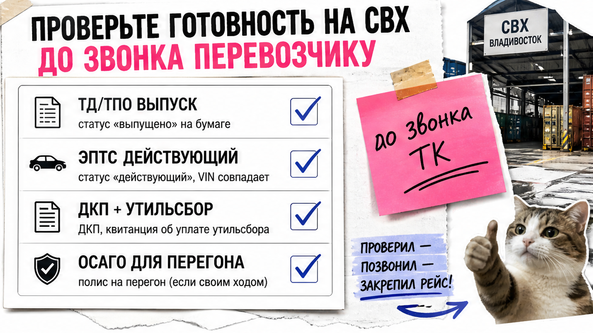
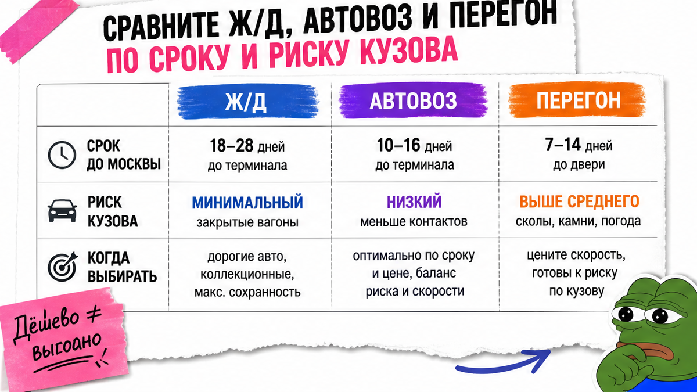
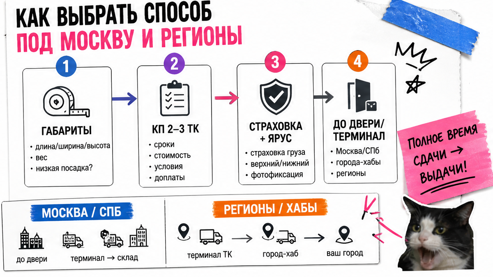

Машина уже не "где-то в Азии" – она на СВХ во Владивостоке, а вы смотрите три прайса и не понимаете, за что платите: за дни, за закрытый кузов или за чужой руль на 9 000 км. Типичная ошибка новичка – взять самый дешёвый автовоз "по звонку" без фотоакта крыши и без вопросов про верхний ярус и страховку. Ниже – сравнение ж/д, автовоза и перегона на 2026 год и чек-лист, после которого останется один способ и акт, а не сюрприз у себя во дворе.
TL;DR / Быстрый инсайт: После выпуска с таможни до оплаты логистики решите три вещи: готов ли пакет документов, что важнее (срок, цена или кузов) и кто отвечает за сколы. Для большинства маршрутов Владивосток–Москва разумный default – автовоз с договором, страховкой груза и верхним ярусом. Ж/д берите, если критичен лакокрасочный слой. Перегон своим ходом – только осознанно, с ОСАГО и без "экономии" через незнакомца без договора.
СВХ – склад временного хранения у таможни. Пока машина там, копятся дни хранения, а после выпуска её обычно нужно вывезти за несколько дней. Поэтому доставка авто из Владивостока – решение "на сегодня": кто заберёт авто, когда и с каким актом.
Ниже редакция Авто-Сейлс разбирает inland-доставку (перевозку по России после таможни) так, будто стоим у площадки во Владивостоке: что спросить, что подписать и что не отпускать "на потом".

Боль простая: на складе давят сроками, а документов не хватает – и человек платит логистику вслепую. Не делайте так. Сначала стоп-лист, потом звонок.
До оплаты перевозчику проверьте:
Для ж/д часто просят контур ЭПТС, копию СТС, паспорт и доверенность, если сдаёт не собственник. На практике одна недостающая бумага срывает погрузку сильнее "долгого" рейса.
Делать: закрыть документы и согласовать вывоз со СВХ так, чтобы между выпуском и погрузкой не копилось хранение. Не делать: переводить предоплату "за бронь", пока нет договора с маршрутом, сроками и лимитом ответственности.

Три способа звучат похоже, а риски разные. Запишите город, желаемую дату получения и приоритет: срок, цена или сохранность кузова. Затем вычеркните варианты, которые этот приоритет ломают.
| Критерий | Ж/д (контейнер / сетка / вагон) | Автовоз | Перегон своим ходом / частник |
|---|---|---|---|
| Срок до Москвы (ориентир 2026) | Контейнер: полный цикл часто 16–40+ дней; закрытый вагон РЖД около 7 дней, но дороже | 18–22 дня в пути + ожидание погрузки (в сезон 3–7 дней, без брони бывает до 2–3 недель) | 7–14 дней активной езды, если всё гладко |
| Риск кузова | Контейнер/закрытый вагон защищают лучше; сетка открытее | Открытая платформа: пыль и сколы; верхний ярус обычно спокойнее | Сколы, камни, ДТП, износ; у частника часто нет страховки груза |
| Контроль в пути | Трекинг контейнера / расписание поезда | Диспетчер, иногда GPS | Полный контроль только если едете сами |
| Когда выбирать | Дорогой/новый кузов, зима, не хотите открытую платформу | Баланс цены и усилий на длинной дистанции | Есть время, ОСАГО и опыт дальних поездок |
Итоговый вердикт: Для большинства новичков на маршруте Владивосток–Москва автовоз с договором и страховкой груза – рабочий default. Ж/д берите, если критичен ЛКП (лакокрасочное покрытие кузова). Перегон "чтобы сэкономить" через незнакомца без договора – плохая идея: в открытых кейсах ремонт после ДТП ложится на владельца.
Например, расстояние порядка 9 100–9 300 км. При 400–500 км в сутки автовоз как раз выходит на 19–22 дня в пути. Цифра "от 14 дней" часто значит экспресс или только дни движения – без очереди на погрузку.

Запросите расчёт у 2–3 перевозчиков по габаритам авто. В каждом КП отдельно спросите:
Для Москвы и Санкт-Петербурга автовоз чаще удобнее: больше рейсов и понятная выдача. Для Краснодара, Новосибирска и других городов уточняйте перегруз через хаб – это добавляет дни и точки повторного осмотра.
Если смотрите ж/д "поездом", уточните формат: закрытый контейнер, вагон-сетка или пассажирский вагон РЖД. Сетка обычно дешевле контейнера, но кузов открытее. Пассажирский вагон быстрее, зато дороже и с жёсткими датами сдачи.
Делать: сравнивать полное время "от сдачи до выдачи". Не делать: выбирать только по самой низкой цене доставки авто из Владивостока автовозом – без яруса и страховки это лотерея по кузову.
Страховка груза без фиксации состояния почти бесполезна. Даже у практиков спор: одни моют авто перед фото, другие нет. Правило Авто-Сейлс проще: важна детальная фото- и видеофиксация при нормальном свете и двусторонний акт, а не "ритуал мойки".
Пошагово в день сдачи:
Workflow сдачи → выдачи:
Документы готовы → КП от 2–3 ТК → Договор со страховкой → Фото/видео + акт на сдаче → Погрузка → Осмотр до подписи на выдаче → Претензия по расхождениям с актом
Типичная ошибка: подписать "без замечаний", а сколы на капоте заметить дома. После такой подписи спорить почти нечем. На практике присутствовать при погрузке желательно – хотя бы чтобы не спорить потом про ярус.
Собирать перевозчика самому имеет смысл, если есть время сравнивать КП и быть на связи в день сдачи. Если машина уже на СВХ, а вы в другом городе – разумнее отдать inland под ключ: вывоз со склада, выбор способа, договор и контроль акта.
Актуальный расчёт под маршрут и габариты – в каталоге avto-sales125.ru. Детали после выпуска – в Telegram @avtosales125. Форм на странице нет: расчёты живут в каталоге и переписке.
Делать: отдавать логистику под ключ, когда нет времени ловить очередь на погрузку. Не делать: путать "дешёвый частный перегон" с под ключ – без договора это другой риск.
Критерий результата: вы сможете выбрать один способ (ж/д / автовоз / перегон), получите ответы от 2–3 перевозчиков про страховку и ярус, соберёте пакет документов и поймёте, что подписывать только после осмотра. Если проблема была в хаосе прайсов – после чек-листа остаётся одно понятное решение.
Материал проверен: Редакция Авто-Сейлс – эксперты по авто под заказ из Японии, Кореи и Китая; хаб логистики во Владивостоке (Днепровская 40а, стр. 4).
Достоверность: ориентиры сроков и правила приёмки сверены 2026-10-05 с открытыми гайдами перевозчиков и чек-листами после таможни (ВИРА, Clever Logistics, TamoPRO, TopRigon); фиксированную сумму под VIN не публикуем – актуальный расчёт в каталоге.
Ориентир в пути – 18–22 дня, экспресс бывает от примерно 14 дней. Отдельно заложите очередь на погрузку: в сезон часто 3–7 дней. Спрашивайте обе цифры в КП, а не одну "срок доставки".
Закрытый контейнер или вагон обычно лучше защищают от гравия и погоды. Автовоз – открытая платформа: выше риск сколов, поэтому уточняйте верхний ярус и страховку груза. Сетку на ж/д не путайте с контейнером – она открытее.
Если нет ОСАГО, опыта дальних поездок и запаса времени – не берите. Ещё хуже – отдать руль частнику без договора и страховки груза ради "экономии": при ДТП ремонт часто остаётся на владельце.
До подписи сверьте кузов, крышу, стёкла, диски и салон с актом и фото со сдачи во Владивостоке. Новые повреждения сразу фиксируйте в акте выдачи и запускайте претензию по договору.
Спорят даже практики. Наш ориентир: важнее свет, детальные фото/видео всех зон (включая крышу) и двусторонний акт. Если грязь прячет дефект – протрите зону и доснимите крупным планом.
Нет единого прайса "для всех VIN": влияют габариты, сезон, ярус, страховка и город выдачи. Сделайте расчёт под конкретную машину в каталоге или уточните детали в Telegram.